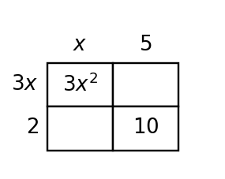

Practice solving quadratic equations in factored form, connecting zeros, intercepts, and the zero product property. Focus on explaining what each solution means.
Write a factored equation with zeros $-4$ and $6$.
For $f(x)=(x-2)(x+8)$, name the $x$-intercepts.
Solve or interpret the quadratic situation for Solving Quadratics by Factoring. Show the algebra that supports your answer.
Complete the table, then decide whether $x=2$ and $x=5$ are zeros of $f(x)=x^2-7x+10$.
| $x$ | 2 | 5 |
|---|---|---|
| $f(x)$ |
Solve or interpret the quadratic situation for Solving Quadratics by Factoring. Show the algebra that supports your answer.
Write and solve a factored equation for zeros $-1$ and $8$.
A table has equal first differences when inputs increase by $1$. Name the most likely family and the evidence that supports it.
A table has first differences that are not constant, but second differences are constant. Name the most likely family and the evidence.
Classify the family for the table and state the rate, difference, or ratio that supports your choice.
| $x$ | 0 | 1 | 2 | 3 |
|---|---|---|---|---|
| $y$ | 4 | 7 | 10 | 13 |
Classify the family for the table and explain what happens to first and second differences.
| $x$ | 0 | 1 | 2 | 3 |
|---|---|---|---|---|
| $y$ | 1 | 4 | 9 | 16 |
Classify the family for the table and state the common ratio.
| $x$ | 0 | 1 | 2 | 3 |
|---|---|---|---|---|
| $y$ | 3 | 6 | 12 | 24 |
A student claims the table below is exponential because the outputs get larger faster than before. Critique the claim using differences or ratios, then state a better family choice.
| $x$ | 0 | 1 | 2 | 3 | 4 |
|---|---|---|---|---|---|
| $y$ | 2 | 5 | 10 | 17 | 26 |
The equation $y=3x+2$ and the table are meant to represent the same relationship. Find the first mismatch, explain how you know, and revise the incorrect value.
| $x$ | 0 | 1 | 2 | 3 |
|---|---|---|---|---|
| $3x+2$ | 2 | 5 | 9 | 11 |
Design a four-representation model for a quadratic with vertex $(2,-3)$ and $y$-intercept $5$: a short context, a four-row table, an equation, and a description of the graph. Make sure each representation gives evidence for the same family.
Circle the greatest common factor in each expression, then write the remaining factor mentally.
Rewrite each sum as a product by factoring out the greatest common factor.
Complete the missing areas in the model, then write one equivalent product for the total area.

A student factors $18x^2+27x$ as $3x(6x+9)$ and says the job is complete.
Critique the work. Identify what is correct, what is incomplete, and write the expression factored completely.
Solve: $(x-5)(x+2)=0$.
Write a factored equation with zeros $3$ and $-7$.
Factor out the greatest common factor: $12x^2+18x$.
A table has constant second differences. What function family does that suggest?